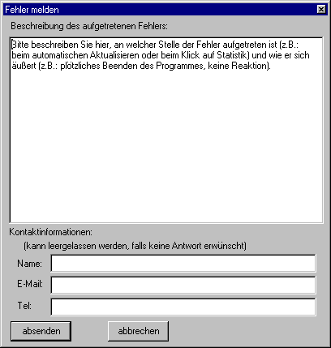

Fehlerrückmeldung
Über das Menü "Hilfe\Fehler melden" kann man dieses Fenster öffnen:

Hiermit kann man mir Fehlermeldungen des Programmes übermitteln.
In das große Feld kann man eine eigene Fehlerbeschreibung eintragen, außerdem fügt das Programm automatisch alle bisher aufgetretenen Fehlermeldungen ein.
Wenn man eine Antwort wünscht, kann man unten im Formular noch Kontaktdaten angeben, das ist aber nicht nötig.
Klickt man auf Abschicken werden die eingegebenen Informationen zusammen mit der Programmversion an ein Skript auf meiner Internetseite übermittelt.